Auxiliar 2: Gases Reales
Seis problemas de gases reales: uso del diagrama generalizado de compresibilidad, derivación del punto crítico para Van der Waals y para otras ecuaciones de estado, y análisis de $Z$ en los distintos regímenes de presión.
Temas que ejercita
- Comparación cuantitativa entre gas ideal y gas real mediante $Z$
- Lectura del diagrama generalizado de compresibilidad con variables reducidas
- Derivación de $a$ y $b$ a partir de las coordenadas críticas
- Cálculo de $Z_c$ para Van der Waals y para otras ecuaciones de estado
- Deducción de la temperatura de Boyle desde el desarrollo virial
- Análisis del comportamiento de $Z$ en los límites de baja y alta presión
- Ley de estados correspondientes aplicada a dos gases distintos
- Presión crítica de componentes en una mezcla
Herramientas que hay que tener a mano
Usar el diagrama de $Z$
Calcular $\pi = P/P_c$ y $\tau = T/T_c$, entrar al gráfico con esas dos coordenadas, leer $Z$, y despejar $\bar V = ZRT/P$. El diagrama es único para todos los gases — esa es la utilidad de la ley de estados correspondientes.
Condiciones del punto crítico
$(\partial P/\partial\bar V)_T = 0$ y $(\partial^2 P/\partial\bar V^2)_T = 0$. Dos ecuaciones más la ecuación de estado dan un sistema de tres. Funciona para cualquier ecuación de estado, no sólo Van der Waals: es lo que pide el P6.
De $a$, $b$ a datos críticos y viceversa
$a = 27R^2T_c^2/64P_c$ y $b = RT_c/8P_c$. Los datos críticos están tabulados, así que esta es la vía práctica para obtener las constantes de un gas cualquiera.
Temperatura de Boyle
Se obtiene anulando el segundo coeficiente virial: $b - a/RT_B = 0 \Rightarrow T_B = a/Rb$. Sustituyendo las expresiones en función de datos críticos queda $T_B = 27T_c/8$.
Límites de $Z$
A $P$ baja domina el término $-a/RT$ y $Z < 1$. A $P$ alta domina $b$ y $Z > 1$. A $T$ alta y $P$ baja ambos efectos se vuelven despreciables y $Z \to 1$. Argumentar cuál término se desprecia es parte de la respuesta.
Estados correspondientes entre gases
Si el gas 1 está a $(P_1, T_1)$, el gas 2 está en estado correspondiente cuando $P_2/P_{c2} = P_1/P_{c1}$ y $T_2/T_{c2} = T_1/T_{c1}$. De ahí se despejan $P_2$ y $T_2$ directamente.
Fórmulas que se usan





Problemas
Datos: $P_c = 33{,}5$ atm; $T_c = 195$ K; $R = 0{,}0821$ L·atm·mol$^{-1}$K$^{-1}$.
- (i) Con gas ideal: $V = nRT/P$ en cada estado y restar. Como $T$ es constante, basta $\Delta V = nRT(1/P_2 - 1/P_1)$.
- (ii) Calcular $\tau = T/T_c$ (la misma para ambos estados, por ser isotérmico) y los dos $\pi_i = P_i/P_c$.
- Entrar al diagrama con cada par $(\tau, \pi_i)$ y leer $Z_1$ y $Z_2$. Notar que $\tau \approx 1{,}5$, así que se trabaja cerca de la región donde las desviaciones son grandes.
- Calcular $V_i = nZ_iRT/P_i$ para cada estado y restar.
- Comparar: la desviación debe ser mayor a 134 atm que a 50 atm, porque $Z$ se aleja más de 1 al aumentar la presión. Comentar el signo y la magnitud del error del modelo ideal.
- Demostrar que $a = \dfrac{27R^2T_c^2}{64P_c}$ y $b = \dfrac{RT_c}{8P_c}$.
- Encontrar el valor de $Z_c$.
- Encontrar una expresión para la temperatura de Boyle. Indicación: es la temperatura a la cual el gas presenta comportamiento aproximadamente ideal.
- (a) Derivar $P$ respecto de $\bar V$ una y dos veces, e igualar ambas a cero en el punto crítico.
- Dividir una ecuación por la otra: se elimina $RT_c$ y queda una relación simple entre $\bar V_c$ y $b$. De ahí sale $\bar V_c = 3b$.
- Volver a cualquiera de las dos derivadas para despejar $T_c$, y a la ecuación de estado original para $P_c$.
- Invertir el sistema: expresar $a$ y $b$ en función de $T_c$ y $P_c$ (eliminando $\bar V_c$, que suele medirse con menos precisión).
- (b) Sustituir las tres coordenadas críticas en $Z_c = P_c\bar V_c/RT_c$. Todo se cancela y queda un número puro.
- (c) Desarrollar $Z$ en serie de potencias de $P$, tomar el coeficiente del término lineal e igualarlo a cero. Opcionalmente, expresar $T_B$ en función de $T_c$.
- A bajas presiones. ¿Qué ocurre con $Z$ si se aumenta la presión?
- A elevadas presiones. ¿Qué ocurre con $Z$ si se aumenta la presión?
- A elevadas temperaturas y bajas presiones.
- Representar los tres casos en un diagrama apropiado.
- Partir del desarrollo $Z = 1 + \frac{1}{RT}\left(b - \frac{a}{RT}\right)P + \dots$ y decidir en cada caso qué término se conserva.
- (i) A $P$ baja, $\bar V$ es grande: el término $b/\bar V$ es despreciable frente a $a/RT\bar V$. Domina la atracción, $Z < 1$, y $Z$ decrece al subir $P$.
- (ii) A $P$ alta, $\bar V$ se acerca a $b$: el denominador $\bar V - b$ se vuelve pequeño y ese término explota. Domina el volumen excluido, $Z > 1$, y $Z$ crece al subir $P$.
- (iii) A $T$ alta, $a/RT \to 0$, y a $P$ baja el término en $b$ tampoco pesa: $Z \to 1$, comportamiento ideal.
- (iv) Graficar $Z$ vs. $P$ con $Z = 1$ como línea de referencia horizontal, dibujando las tres curvas: una que baja bajo 1 y vuelve a subir, una que crece monótonamente, y una prácticamente plana en 1.
- Cada afirmación debe ir acompañada del supuesto que la justifica — el enunciado lo pide explícitamente y es donde se reparte el puntaje.
- La temperatura y presión a la que debe someterse el nitrógeno para estar en estados correspondientes con el hidrógeno.
- El correspondiente factor de compresibilidad usando el diagrama.
- Los volúmenes molares y reducidos de cada gas. Comentar el resultado.
- (a) Calcular $\pi$ y $\tau$ del hidrógeno con sus propias constantes críticas.
- Imponer que el nitrógeno tenga los mismos $\pi$ y $\tau$: $P_{\mathrm{N_2}} = \pi P_{c,\mathrm{N_2}}$ y $T_{\mathrm{N_2}} = \tau T_{c,\mathrm{N_2}}$.
- (b) Como ambos comparten $(\tau, \pi)$, entran al mismo punto del diagrama: leen el mismo $Z$. Ese es el contenido de la ley de estados correspondientes.
- (c) Calcular $\bar V_i = Z RT_i/P_i$ para cada gas — darán números distintos, porque las condiciones absolutas difieren.
- Calcular $\phi_i = \bar V_i/\bar V_{c,i}$: deben coincidir. Ese es el comentario que pide el enunciado.
- Obtener la presión parcial de cada componente con Dalton: $p_i = x_iP$.
- Calcular la temperatura reducida de cada gas: $\tau_i = T/T_{c,i}$, con $T = 369{,}15$ K.
- Entrar al diagrama generalizado con $\tau_i$ y el $Z_i$ dado, y leer hacia atrás la presión reducida $\pi_i$ correspondiente. Este es el paso invertido respecto del uso habitual del diagrama.
- Despejar $P_{c,i} = p_i/\pi_i$.
- Chequeo: los valores obtenidos deben ser del orden de decenas de atm, comparables a los datos tabulados de estos hidrocarburos.
Indicación: en el punto crítico se cumple $(\partial P/\partial\bar V)_T = 0$ y $(\partial^2P/\partial\bar V^2)_T = 0$.
- Mismo método que en el P2, pero con esta ecuación: derivar una y dos veces respecto de $\bar V$.
- Igualar ambas derivadas a cero en el punto crítico. Quedan dos ecuaciones en $\bar V_c$, $T_c$, $B$ y $C$.
- Combinarlas para eliminar $RT_c$ y despejar $\bar V_c$ en función de $B$ y $C$.
- Retroceder para obtener $T_c$ y luego $P_c$ evaluando la ecuación de estado original.
- Sustituir en $Z_c = P_c\bar V_c/RT_c$: los parámetros $B$ y $C$ deben cancelarse y dejar un número puro, igual que el $3/8$ de Van der Waals.
- Comparar con $3/8$: cada ecuación de estado predice su propio $Z_c$ universal, y ninguna acierta el valor experimental.
Estrategia general
- El método del punto crítico (dos derivadas nulas + ecuación de estado) aparece en el P2 y en el P6 con ecuaciones distintas. Aprender el método, no el resultado $\bar V_c = 3b$.
- Al usar el diagrama generalizado, verificar siempre que $\pi$ y $\tau$ estén dentro del rango graficado antes de leer $Z$.
- El diagrama se puede leer en ambas direcciones: dados $(\tau,\pi)$ se obtiene $Z$, y dados $(\tau, Z)$ se obtiene $\pi$. El P5 usa la segunda.
- Antes de desarrollar en serie, decidir la variable: $Z$ en potencias de $1/\bar V$ o en potencias de $P$. Para la temperatura de Boyle conviene la segunda.
- Cuando el enunciado pide "argumentar los supuestos" (P3), el desarrollo algebraico sin la justificación física vale poco. Decir explícitamente qué término se desprecia y por qué.
- Chequeo permanente: $Z < 1$ significa atracción dominante; $Z > 1$, volumen excluido dominante. Si un resultado numérico contradice el régimen esperado, revisar.